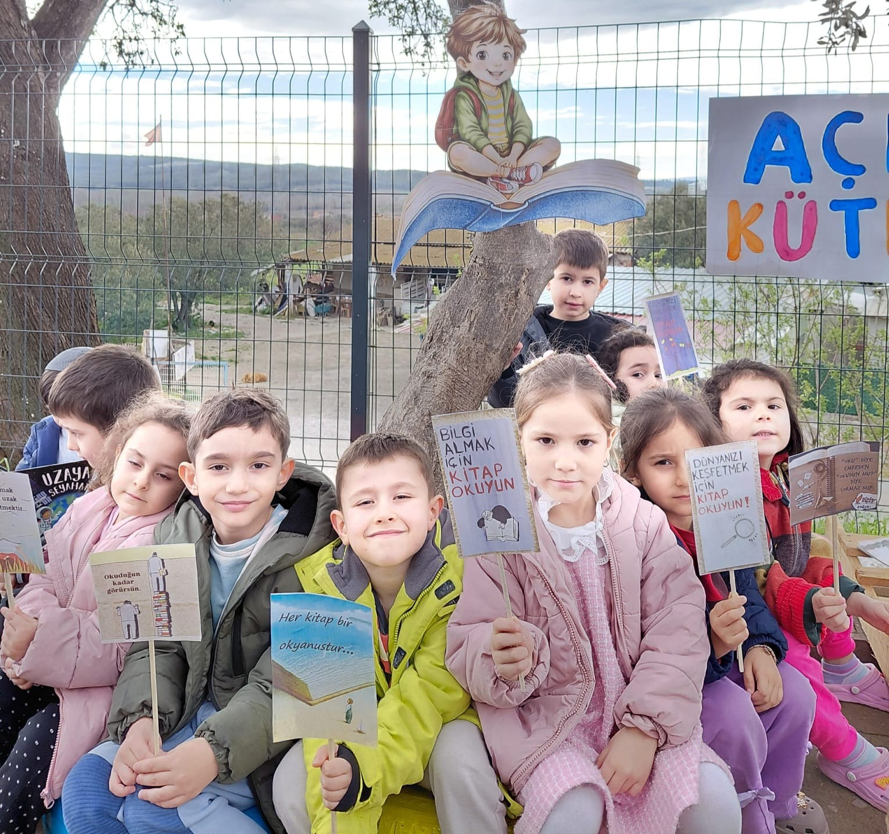
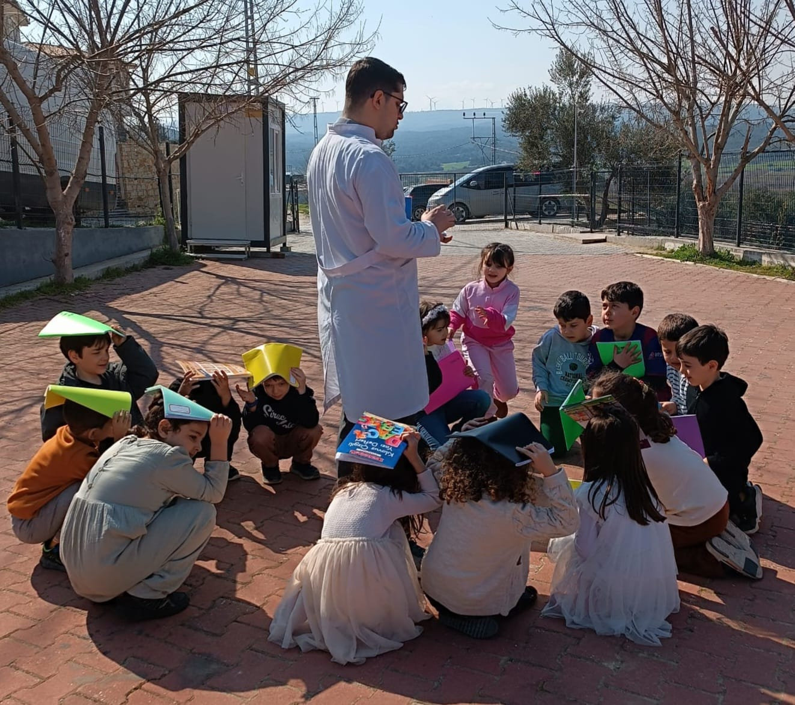
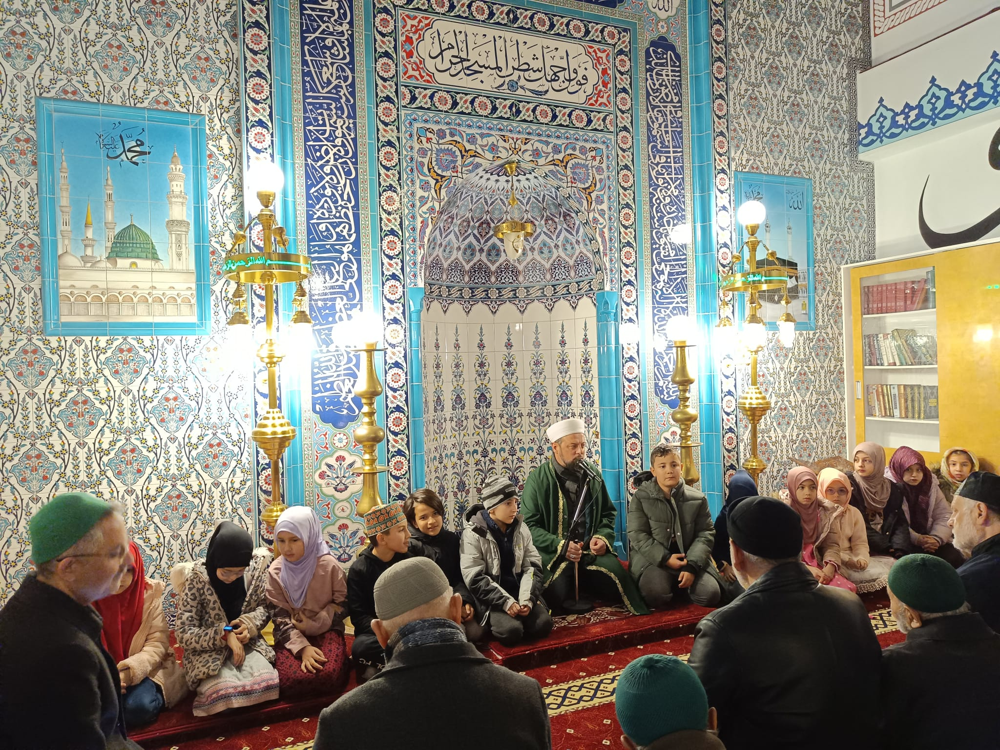
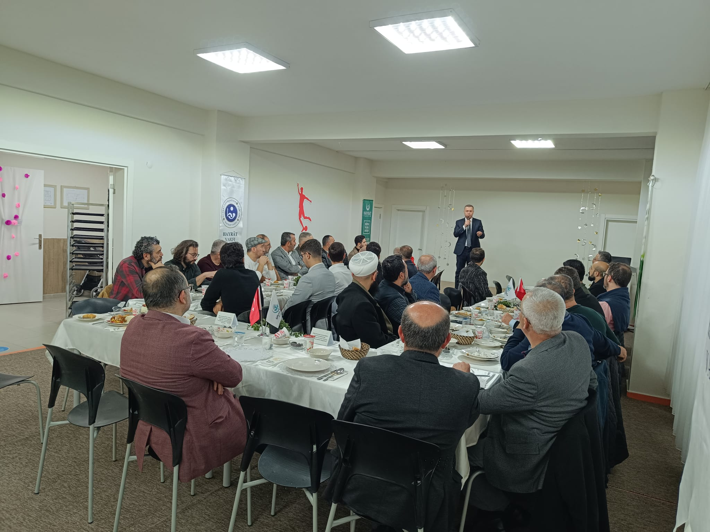

Etkinlik

Nisan Kütüphaneler Haftası
30 Mart - 3 Nisan Kütüphaneler Haftası kapsamında okulumuz bahçesinde Açık Hava Kütüphanesi etkinliği gerçekleştirildi.
Okulumuzun akademik başarıları, sosyal etkinlikleri ve modern kampüs yaşamından en güncel gelişmeleri buradan takip edin.
Okulumuzdan en yeni haberleri ve duyuruları buradan takip edebilirsiniz

30 Mart - 3 Nisan Kütüphaneler Haftası kapsamında okulumuz bahçesinde Açık Hava Kütüphanesi etkinliği gerçekleştirildi.

Okulumuzda afet bilinci oluşturmak amacıyla kapsamlı bir deprem tatbikatı ve tahliye süreci başarıyla tamamlandı.
Okul etkinliklerimizden özel video ve fotoğraflar

